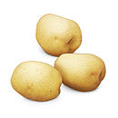

생선조림
냄비에 고추장, 간장, 설탕, 물을 넣고 끓으면 생선을 넣고 끓이다가 대파, 마늘, 생강을 넣어 조린것이다. 경남지역에서는 흰살생선(조기, 가자미, 갈치, 연어), 등푸른생선(고등어, 꽁치, 삼치, 전갱이 등)을 이용한 조림류가 많고, 마른 생선조림도 있다.
안동찜닭
한번 데쳐낸 닭고기에 간장으로 간하고 요기에 각종야채와 건고추로 양념을 한 후 삶은 당면을 넣어서 양을 무짐하게 합니다

진간장 술(소주나 맥주) 설탕 건고추 소금약간 물엿 참기름 간마늘 생강 파 당근 양파를 넣어서 푹 끓이다가 당면을 넣는데 중국당면을(칼국수같은 당면) 쓰면 빨리 불지 않고 식감도 아주 좋습니다.
감자보관방법
바람이 잘 통하는 곳에 보관하고 바구니에 사과와 같이 보관하면 싹이 나는 것을 방지한다. 껍질을 까 놓은 감자는 찬물에 담가 물기를 뺸 후 물기 제거 후 비닐봉지나 랩에 싸서 냉장 보관한다.
오늘의쇼핑

오늘 단 하루
30% 과일세일
50%파격세일

여름 의류
50% 대박할인